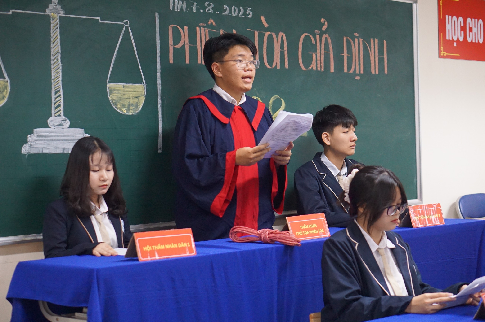
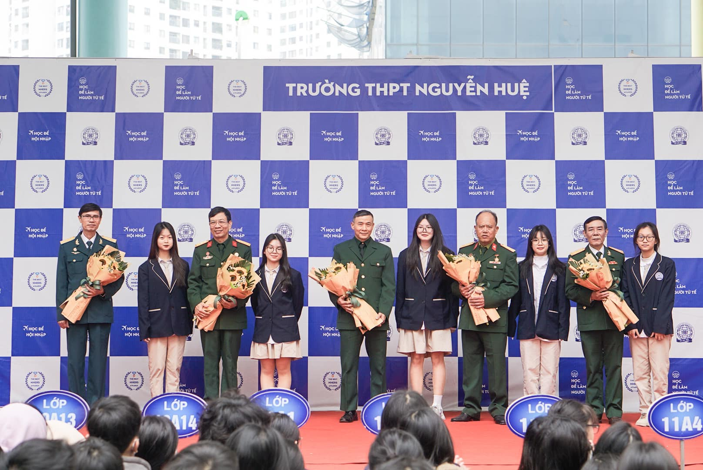
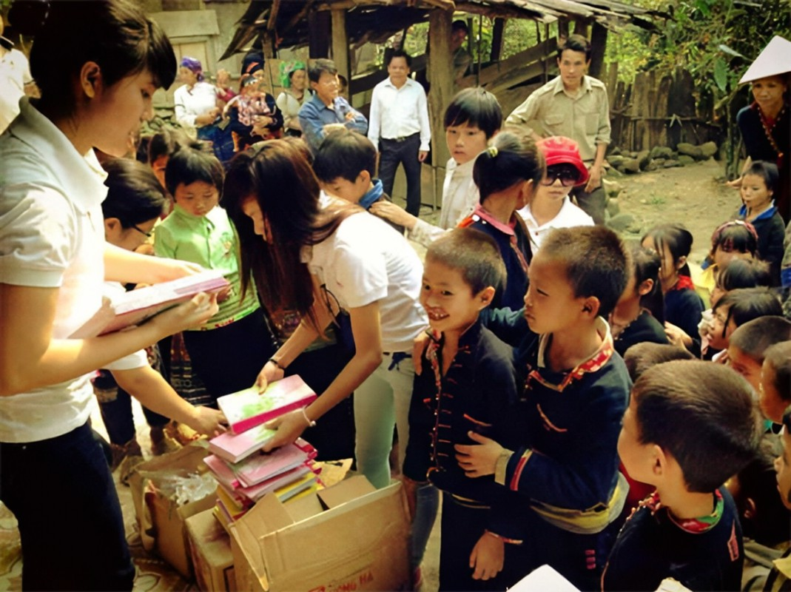
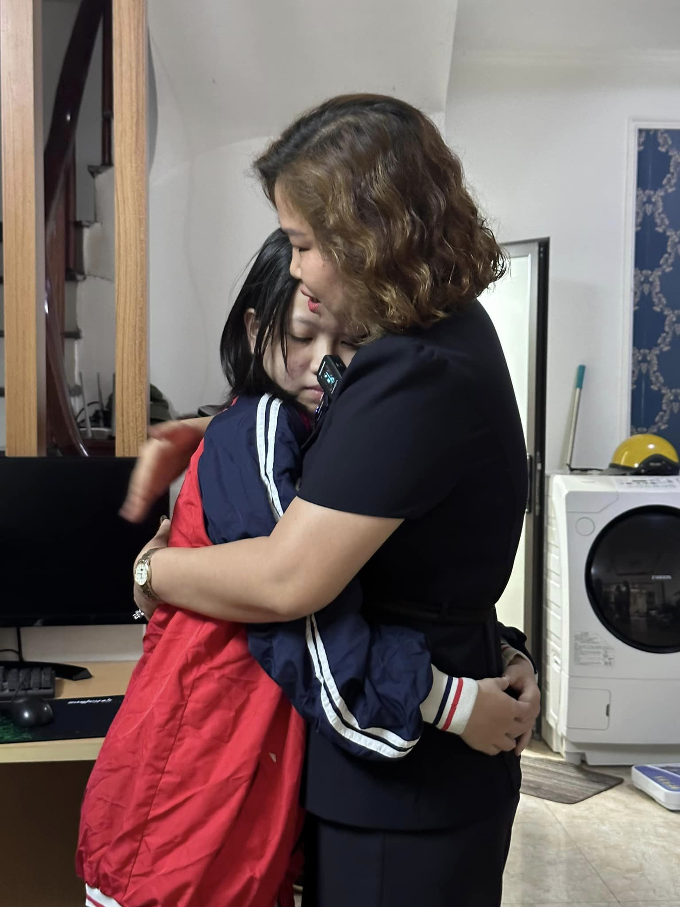

TIN TỨC-SỰ KIỆN

“Ta không được chọn nơi mình sinh ra nhưng ta được chọn cách mình sẽ sống”
Thầy cô và các bạn nhỏ trường PTDTBT THCS Tả Gia Khâu – Mường Khương, Lào Cai đón chúng tớ bằng những sự chân chất, thật thà, nụ cười hồn nhiên, đón tiếp nồng hậu; bằng sự bỡ ngỡ, thẹn thùng, cả niềm vui, ánh mắt háo hức, khi nhận được cuốn sách mới,… những điều nhỏ như vậy thôi nhưng lại đầy ấm áp! Toàn bộ những cuốn SGK, đồ dùng học tập, sách truyện, đồ chơi,.. và cả những yêu thương của ngàn người Nguyễn Huệ gửi gắm đã được thầy trò nhà mình đồng hành cùng nhóm thiện nguyện “Chắp cánh những niềm vui”, “Ước mơ triệu cây xanh” tận tay trao cho các em nhỏ vùng cao trước thềm năm học mới. Nhưng hành trình này đâu chỉ đến để cho đi mà chúng mình cũng nhận được rất nhiều năng lượng tích cực, bao trải nghiệm quý giá, tình yêu thương và cả những điều tử tế bé nhỏ. Để rồi, đi thật xa như vậy để là trở về với cuộc sống thường ngày mà vẫn duy trì những giá trị ấy, làm sao cho điều tử tế được lan tỏa và yêu thương luôn đầy ắp nơi tim.
Thầy cô và các bạn nhỏ trường PTDTBT THCS Tả Gia Khâu – Mường Khương, Lào Cai đón chúng tớ bằng những sự chân chất, thật thà, nụ cười hồn nhiên, đón tiếp nồng hậu; bằng sự bỡ ngỡ, thẹn thùng, cả niềm vui, ánh mắt háo hức, khi nhận được cuốn sách mới,… những điều nhỏ như vậy thôi nhưng lại đầy ấm áp! Toàn bộ những cuốn SGK, đồ dùng học tập, sách truyện, đồ chơi,.. và cả những yêu thương của ngàn người Nguyễn Huệ gửi gắm đã được thầy trò nhà mình đồng hành cùng nhóm thiện nguyện “Chắp cánh những niềm vui”, “Ước mơ triệu cây xanh” tận tay trao cho các em nhỏ vùng cao trước thềm năm học mới. Nhưng hành trình này đâu chỉ đến để cho đi mà chúng mình cũng nhận được rất nhiều năng lượng tích cực, bao trải nghiệm quý giá, tình yêu thương và cả những điều tử tế bé nhỏ. Để rồi, đi thật xa như vậy để là trở về với cuộc sống thường ngày mà vẫn duy trì những giá trị ấy, làm sao cho điều tử tế được lan tỏa và yêu thương luôn đầy ắp nơi tim.
Môn GDKTPL: Phiên tòa giả định của học sinh khối 10-11:
Ngày 14/8 vừa qua, Trường THPT Nguyễn Huệ đã cùng các em học sinh tổ chức một sự kiện giáo dục vô cùng đặc biệt với chuyên đề “Phiên tòa giả định” của môn Giáo dục Kinh Tế và Pháp Luật khối 10, 11. Sự kiện đã thu hút sự quan tâm lớn không chỉ thầy cô giáo, các em học sinh mà còn có phụ huynh.
Cô Nguyễn Thị Mai Huệ, Hiệu trưởng nhà trường đã có đôi lời chia sẻ: “Chúng tôi nhận thấy rằng việc học tập không chỉ đơn thuần là hấp thụ kiến thức mà phải áp dụng chúng vào trong thực tế.


THÁNG 12 – LỊCH SỬ VẺ VANG
“Ơi! Việt Nam, đất nước của những căn nhà nhỏ
Của những con người tầm vóc không cao
Nhưng chiến công của họ
Thật vô cùng hiển hách và lớn lao…”
Những vần thơ hào hùng gợi nhớ tháng 12 lịch sử với kỉ niệm Ngày toàn quốc kháng chiến 19/12/1946; Chiến thắng Điện Biên Phủ trên không tháng 12/1972; 34 năm Ngày Quốc phòng toàn dân và 79 năm Ngày thành lập Quân đội Nhân dân Việt Nam (22/12/1944 – 22/12/2023)
Xin được tri ân các cán bộ giáo viên, nhân viên – những người cựu chiến binh, những nhân chứng lịch sử về một thời khói lửa khốc liệt nhưng vẻ vang của toàn quân và dân ta: br 1 Đại tá Trần Xuân Sinh – Nguyên Bí thư Đảng uỷ, K3-12, Cục Kỹ thuật phòng không – không quân;
2 Thượng tá Phạm Văn Khích – Nguyên chính trị viên, Ban chỉ huy quân sự quận Hai Bà trưng, Bộ tư lệnh thủ đô;
3 Thượng tá Hà Đăng Huệ – Trợ lý quân Pháp, Quân đoàn 2
4 Thượng uý Hà Thanh Nam – Bộ đội Quân khu 7;
5 Thượng sỹ Nguyễn Văn Bình – Trung đội trưởng Trung đoàn 1 Quân khu 9;
6 Trung sỹ Nguyễn Văn Lời – X8-17 Cục Hậu cần;
7 Hạ sỹ Nguyễn Đức Tường – VDV TDTT quân đoàn 1;
Đó là tinh thần bất khuất, kiên trung sẽ trở thành động lực cho mỗi chúng ta “chân cứng, đá mềm” và cùng nhau, NHers lan toả lòng biết ơn bằng những hành động ý nghĩa
#quandoinhandan #ngayquocphongtoandan #dienbienphutrenkhong
Của những con người tầm vóc không cao
Nhưng chiến công của họ
Thật vô cùng hiển hách và lớn lao…”
Những vần thơ hào hùng gợi nhớ tháng 12 lịch sử với kỉ niệm Ngày toàn quốc kháng chiến 19/12/1946; Chiến thắng Điện Biên Phủ trên không tháng 12/1972; 34 năm Ngày Quốc phòng toàn dân và 79 năm Ngày thành lập Quân đội Nhân dân Việt Nam (22/12/1944 – 22/12/2023)
Xin được tri ân các cán bộ giáo viên, nhân viên – những người cựu chiến binh, những nhân chứng lịch sử về một thời khói lửa khốc liệt nhưng vẻ vang của toàn quân và dân ta: br 1 Đại tá Trần Xuân Sinh – Nguyên Bí thư Đảng uỷ, K3-12, Cục Kỹ thuật phòng không – không quân;
2 Thượng tá Phạm Văn Khích – Nguyên chính trị viên, Ban chỉ huy quân sự quận Hai Bà trưng, Bộ tư lệnh thủ đô;
3 Thượng tá Hà Đăng Huệ – Trợ lý quân Pháp, Quân đoàn 2
4 Thượng uý Hà Thanh Nam – Bộ đội Quân khu 7;
5 Thượng sỹ Nguyễn Văn Bình – Trung đội trưởng Trung đoàn 1 Quân khu 9;
6 Trung sỹ Nguyễn Văn Lời – X8-17 Cục Hậu cần;
7 Hạ sỹ Nguyễn Đức Tường – VDV TDTT quân đoàn 1;
Đó là tinh thần bất khuất, kiên trung sẽ trở thành động lực cho mỗi chúng ta “chân cứng, đá mềm” và cùng nhau, NHers lan toả lòng biết ơn bằng những hành động ý nghĩa
#quandoinhandan #ngayquocphongtoandan #dienbienphutrenkhong
HOẠT ĐỘNG THIỆN NGUYỆN
GIÁO DỤC LÒNG NHÂN ÁI CHO HỌC SINH BẰNG CÁC HOẠT ĐỘNG THIỆN NGUYỆN
Là một trong các hoạt động thường niên của trường, vừa qua Đoàn trường, Trường THPT chuyên Lê Quý Đôn ở TP. Đông Hà đã phối hợp với các nhà hảo tâm, các cơ quan đơn vị, tổ chức nhiều hoạt động thiện nguyện, ý nghĩa.
Chi đoàn 10 Anh của trường đã vận động nhà tài trợ để có khoản kinh phí lớn tổ chức thăm và tặng quà cho những gia đình có hoàn cảnh khó khăn ở xã Cam Hiếu, huyện Cam Lộ và học sinh Trung tâm Mái ấm tình hồng TP. Đông Hà.
Bí thư Đoàn trường Nguyễn Thị Tâm cho biết, riêng thời gian đầu năm đã có 7 hoạt động với hơn 200 suất quà với tổng trị giá 116 triệu đồng đã được các em kịp thời tặng cho người có hoàn cảnh khó khăn trên địa bàn huyện Cam Lộ; huyện Đakrông; TP. Đông Hà; học sinh thuộc diện chính sách đang học tại Trường THPT chuyên Lê Quý Đôn.
Tại mỗi điểm đến các em đã biểu diễn các tiết mục văn nghệ, ân cần trao những món quà ý nghĩa, ý tứ thăm hỏi chuyện trò, chia sẻ cùng các đối tượng.
Hiệu trưởng Trường THPT chuyên Lê Quý Đôn Nguyễn Hoài Nam chia sẻ, học sinh của trường không chỉ tập trung cao độ, nâng cao kiến thức trong giáo trình, các em còn rất năng nổ, nhiệt huyết trong các hoạt động thiện nguyện; luôn giúp đỡ người có hoàn cảnh khó khăn.
Có được kết quả này nhờ sự sát sao dạy bảo của gia đình; quá trình khơi gợi lòng trắc ẩn cho học sinh từ các thầy, cô giáo giúp các em từng bước vun đắp thêm ý thức tốt của chính bản thân mình bằng những việc làm ý nghĩa.
Không những chỉ mỗi dịp Tết đến, xuân về mà các hoạt động thiện nguyện này được duy trì xuyên suốt cả năm học. Đó là những bài học sống động để bồi đắp thêm lòng yêu thương con người trong mỗi học sinh.
Là đơn vị trường học ở vùng nông thôn, Trường THPT Vĩnh Định, huyện Triệu Phong trong 10 năm qua đã liên tục tổ chức hiệu quả chương trình “Thắp sáng ước mơ Vĩnh Định”. Mục đích của chương trình là mong muốn được chia sẻ khó khăn, động viên tiếp sức cho học sinh nghèo vượt khó vươn lên của trường, có cơ hội được “thắp sáng ước mơ”, không phải bỏ dở đam mê vì những trở ngại trong cuộc sống.
Chương trình còn là cơ hội để đoàn viên, thanh niên trong nhà trường được trải nghiệm, rèn luyện kỹ năng sống, kỹ năng làm việc tập thể cũng như học được cách sống nhân ái, sẻ chia với cộng đồng.
Nhờ đó, các em có cơ hội được cống hiến và trưởng thành. Kết quả của chương trình lần thứ 11 này, Ban tổ chức đã trao 62 suất học bổng với tổng trị giá 99,5 triệu đồng cho học sinh khó khăn vươn lên học tập tốt. Hội Chữ thập đỏ trường cũng trao 28 suất quà cho học sinh có hoàn cảnh khó khăn.
Em Nguyễn Lê Anh Thư, học sinh lớp 10A1 cho biết, ngay khi chương trình được nhà trường phát động, chi đoàn đã hưởng ứng thực hiện gây quỹ hỗ trợ bằng việc tổ chức các gian hàng từ thiện bán các mặt hàng như bao lì xì, móc khóa, khẩu trang... Thấy được giá trị của chương trình nên các bạn trong lớp nhiệt tình tham gia.
Bên cạnh đó, lớp cũng tổ chức góp tiền vào heo đất mỗi tuần để có thêm kinh phí ủng hộ các bạn. Em được biết, trong những năm qua thiên tai, dịch bệnh đã tác động rất lớn làm nhiều gia đình học sinh vốn đã khó khăn lại càng thiếu thốn hơn, nhiều bạn có nguy cơ nghỉ học giữa chừng. Vì vậy, các bạn rất cần sự hỗ trợ kịp thời này, mỗi người mỗi ít, gom lại sẽ giúp được nhiều hơn.
Theo Hiệu trưởng Trường THPT Vĩnh Định Dương Mạnh Hùng, chương trình “Thắp sáng ước mơ Vĩnh Định” nhận được sự ủng hộ nhiệt tình của đông đảo học sinh, cán bộ, giáo viên, phụ huynh và các nhà hảo tâm.
Thành công của chương trình có ý nghĩa thiết thực, bên cạnh góp phần động viên những học sinh có hoàn cảnh khó khăn phấn đấu vươn lên trong học tập và cuộc sống; còn là dịp để khơi dậy tinh thần “tương thân tương ái” trong mỗi học sinh, dạy cho các em biết sự sẻ chia kịp thời có ý nghĩa như thế nào trong cuộc sống và bản thân phải sống thật tốt để lan tỏa yêu thương nhiều hơn tới mọi người.
Chia sẻ về những hoạt động ý nghĩa này, Phó Giám đốc Sở Giáo dục và Đào tạo Phan Hữu Huyện cho biết, dạy học sinh kiến thức và lòng trắc ẩn là giá trị căn bản của giáo dục mà ngành luôn quan tâm. Việc làm này đang được nhân lên, lan tỏa đến mọi trường học trên địa bàn tỉnh.
Nhiều trường tiểu học khơi gợi lòng yêu thương con người cho học sinh bằng chương trình như tặng sách vở, nuôi heo đất, cặp lá yêu thương tặng học sinh có hoàn cảnh khó khăn; áo lụa tặng bà...
Các trường THCS có hoạt động kế hoạch nhỏ của đội viên. Học sinh THPT thì có các hoạt động gây quỹ như tổ chức đêm nhạc, bán hàng, tự thiết kế các sản phẩm để tặng quà…
Bằng nhiều việc làm khác nhau, cách thức thể hiện khác nhau nhưng những hoạt động này của các trường, học sinh có chung một mục đích đó là mang yêu thương chia sẻ đến những người có hoàn cảnh khó khăn hơn mình.
Hàng nghìn món quà là hàng nghìn lần chia sẻ được trao đi, từ đó lan tỏa giá trị của lòng nhân ái và giáo dục văn hóa thiện nguyện đến mọi người.

TUẦN YÊU THƯƠNG CỦA NGUYỄN HUỆ
Yêu thương gửi trao: Em Lê Tâm Như (13 tuổi) là thành viên duy nhất trong gia đình 4 người sống sót sau vụ cháy.
Về thăm quê nhà và thắp nén hương chia buồn cùng gia đình con, những giọt nước mắt tiếc thương vẫn chẳng thế nào nguôi khi chứng kiến di ảnh người mất, cảnh ông bà nội hơn 70 tuổi nuôi cháu xót xa vô cùng!
Dưới sự chứng kiến của Đại diện chính quyền xã Thọ Xuân, Đan Phượng; ông bà nội và trước anh linh bố, mẹ, em trai, đại diện BGH, Công đoàn và Đoàn Thanh niên trường THPT Nguyễn Huệ đã trao quyết định bảo trợ học sinh Lê Tâm Như với mức 3.000.000đ/tháng đến hết lớp 12 và tiếp tục đồng hành xin học bổng toàn phần tại các trường đại học.
Chỉ mong những yêu thương này sẽ phần nào giúp gia đình sớm vượt qua nỗi đau và Nguyễn Huệ sẽ là những người cha, người mẹ, người thầy, người bạn, là ngôi nhà thứ hai của Tâm Như để đồng hành cùng con trên chặng đường tương lai.
Về thăm quê nhà và thắp nén hương chia buồn cùng gia đình con, những giọt nước mắt tiếc thương vẫn chẳng thế nào nguôi khi chứng kiến di ảnh người mất, cảnh ông bà nội hơn 70 tuổi nuôi cháu xót xa vô cùng!
Dưới sự chứng kiến của Đại diện chính quyền xã Thọ Xuân, Đan Phượng; ông bà nội và trước anh linh bố, mẹ, em trai, đại diện BGH, Công đoàn và Đoàn Thanh niên trường THPT Nguyễn Huệ đã trao quyết định bảo trợ học sinh Lê Tâm Như với mức 3.000.000đ/tháng đến hết lớp 12 và tiếp tục đồng hành xin học bổng toàn phần tại các trường đại học.
Chỉ mong những yêu thương này sẽ phần nào giúp gia đình sớm vượt qua nỗi đau và Nguyễn Huệ sẽ là những người cha, người mẹ, người thầy, người bạn, là ngôi nhà thứ hai của Tâm Như để đồng hành cùng con trên chặng đường tương lai.
